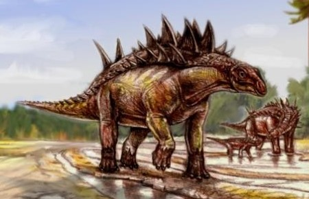
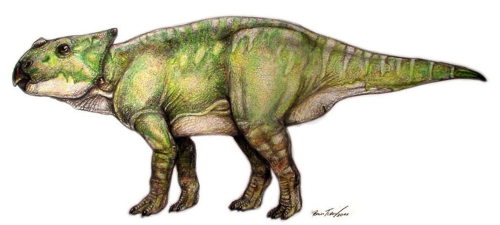
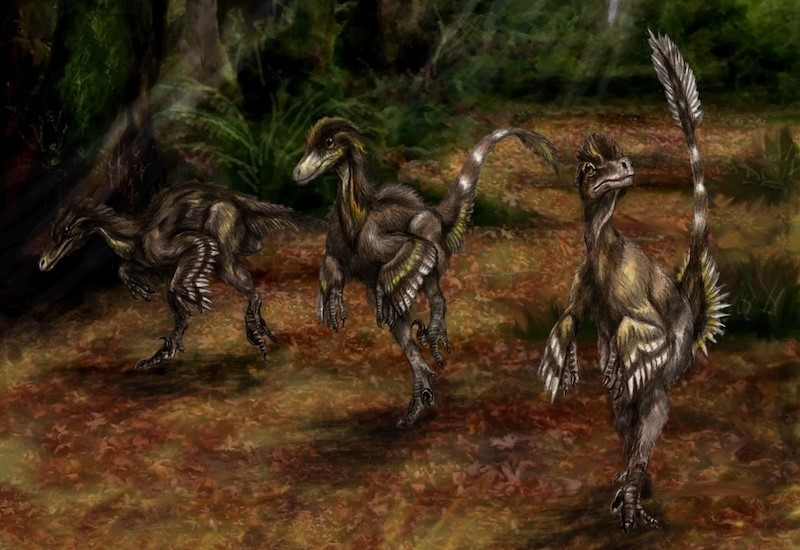
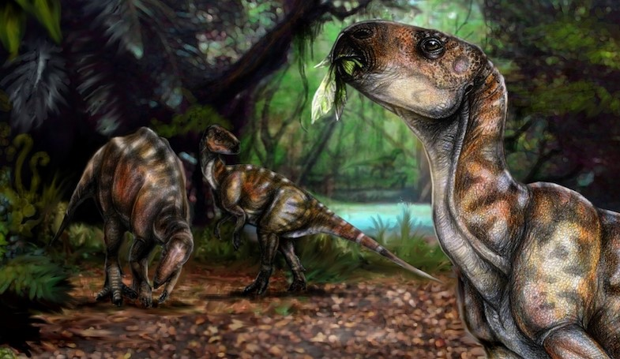
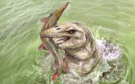

Magyar dinoszauruszok
A Magyar Dinoszaurusz-kutató Expedíció név nem csupán egy gyűjtőexpedíciót, hanem sokkal inkább egy kutatócsoportot takar, mely nemcsak dinoszauruszokkal, hanem a hazai mezozoikumi gerinces lelőhelyek élővilágával is foglalkozik.
Az ásatás
A tényleges terepi munkálatok, összecsukható pavilon alatti ásatások mellett a kutatócsoport tagjai a lelőhelyről előkerült ősmaradványok tudományos feldolgozását, dokumentálását, szaklapokban történő leközlését is végzik, és a hazai, illetve nemzetközi tudományos közönség elé konferenciákon tárják eredményeiket.
Fontosnak tarjuk, hogy ne csak az eredményeket tegyük közzé, hanem magukat az eredeti sok millió éves fosszíliákat is megnézhesse az érdeklődő. A publikálás és médiamegjelenés mellett a bakonyi leletek egy része megtekinthető a Magyar Természettudományi Múzeum „Eltűnt Világok” című állandó kiállítás részeként is.
Egykori élővilág
Hungarosaurus tormai
Az iharkúti fauna legjobban ismert eleme a Hungarosaurus. A 4–4,5 méter hosszú, négy lábon járó, növényevő páncélos dinoszaurusz...
RészletekAjkaceratops kozmai

Az Ajkaceratops feltehetően négy lábon járó, növényevő dinoszaurusz volt, papagájcsőrszerű állkapoccsal...
Részletek
Pneumatoraptor fodori
Az iharkúti fauna legkisebb ragadozó dinoszaurusza. Töredékes leletei alapján tudjuk, hogy nem érhette el egy kifejlett pulyka méretét sem...
RészletekMochlodon vorosi
A kistermetű, növényevő Mochlodon maximum 2 méteres testhosszával az egyik legkisebb lehetett az ezidáig csak Európából ismert...
RészletekBakonydraco galaczi

A Bakonydraco egy körülbelül 3,5–4 méter szárnyfesztávolságú, az Azhdarchidaek családjába sorolható repülő hüllő (Pterosauria) volt…
RészletekPannoniasaurus inexpectatus
A moszaszauroideák a ma élő pikkelyes hüllők (Squamata) közé tartozó, de a kréta végén kihalt pikkelyes hüllőcsoport...
RészletekForrás: magyardinoszaurusz.hu